농산물품질관리사-1차 (2019-05-18 기출문제)
1과목: 관계 법령
1. 농수산물 품질관리법상 지리적표시에 관한 정의이다. ( )에 들어갈 내용으로 옳은 것은?
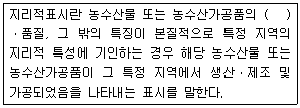
- 포장
- 무게
- 생산자
- 명성
(정답률: 82%)

2. 농수산물 품질관리법령상 유전자변형농수산물의 표시 등에 관한 설명으로 옳지 않은 것은?
- 유전자변형농수산물을 판매하는 자는 대통령령으로 정하는 바에 따라 해당 농수산물에 유전자변형농수산물임을 표시하여야 한다.
- 농림축산식품부장관은 유전자변형농수산물인지를 판정하기 위하여 필요한 경우 시료의 검정기관을 지정하여 고시하여야 한다.
- 유전자변형농수산물의 표시기준 및 표시방법에 관한 세부사항은 식품의약품안전처장이 정하여 고시한다.
- 유전자변형농수산물의 표시대상품목, 표시기준 및 표시방법 등에 필요한 사항은 대통령령으로 정한다.
(정답률: 39%)
3. 농수산물 품질관리법상 농수산물품질관리심의회의 심의 사항이 아닌 것은?
- 표준규격 및 물류표준화에 관한 사항
- 지리적표시에 관한 사항
- 유전자변형농수산물의 표시에 관한 사항
- 유기농가공식품의 수입 및 통관에 관한 사항
(정답률: 79%)
4. 농수산물의 원산지 표시에 관한 법령상 일반음식점 영업을 하는 자가 농산물을 조리 하여 판매하는 경우 원산지 표시를 하지 않아 1차 위반행위로 부과되는 과태료 기준 금액이 다른 것은? (단, 가중 및 경감사유는 고려하지 않음)
- 쇠고기
- 양고기
- 돼지고기
- 오리고기
(정답률: 64%)
5. 농수산물의 원산지 표시에 관한 법령상 일반음식점 영업을 하는 자가 농산물을 조리하여 판매하는 경우 원산지 표시 대상이 아닌 것은?
- 죽에 사용하는 쌀
- 콩국수에 사용하는 콩
- 동치미에 사용하는 무
- 배추김치의 원료인 배추와 고춧가루
(정답률: 80%)
6. 농수산물 품질관리법령상 농산물우수관리인증의 유효기간 연장신청은 인증의 유효기간이 끝나기 몇 개월 전까지 어디에 제출해야 하는가?
- 1개월, 농림축산식품부
- 1개월, 우수관리인증기관
- 2개월, 국립농산물품질관리원
- 2개월, 한국농수산식품유통공사
(정답률: 77%)
7. 농수산물 품질관리법령상 농산물 생산자(단순가공을 하는 자를 포함)의 이력추적관리 등록사항이 아닌 것은?
- 재배면적
- 재배지의 주소
- 구매자의 내역
- 생산자의 성명, 주소 및 전화번호
(정답률: 96%)
8. 농수산물 품질관리법령상 이력추적관리 등록기관의 장은 이력추적관리 등록의 유효기간이 끝나기 얼마 전까지 신청인에게 갱신절차와 갱신신청 기간을 미리 알려야 하는가?
- 7일
- 15일
- 1개월
- 2개월
(정답률: 65%)
9. 농수산물의 원산지 표시에 관한 법령상 원산지 표시위반 신고 포상금의 최대 지급 금액은?
- 200만원
- 500만원
- 1,000만원
- 2,000만원
(정답률: 67%)
10. 농수산물 품질관리법령상 농산물 검사에서 농림축산식품부장관의 검사를 받아야 하는 농산물이 아닌 것은?
- 정부가 수매하거나 수출 또는 수입하는 농산물
- 정부가 수매하는 누에씨 및 누에고치
- 생산자단체등이 정부를 대행하여 수출하는 농산물
- 정부가 수입하여 가공한 농산물
(정답률: 80%)
11. 농수산물 품질관리법상 권장품질표시에 관한 내용으로 옳지 않은 것은?
- 농림축산식품부장관은 표준규격품의 표시를 하지 아니한 농산물의 포장 겉면에 등급ㆍ당도 등 품질을 표시하는 기준을 따로 정할 수 있다.
- 농산물을 유통ㆍ판매하는 자는 표준규격품의 표시를 하지 아니한 경우 포장 겉면에 권장품질표시를 할 수 있다.
- 권장품질표시의 기준 및 방법 등에 필요한 사항은 국립농산물품질관리원장이 정하여 고시한다.
- 농림축산식품부장관은 관계 공무원에게 권장품질표시를 한 농산물의 시료를 수거하여 조사하게 할 수 있다.
(정답률: 53%)
12. 농수산물 품질관리법령상 지리적표시의 심의ㆍ공고ㆍ열람 및 이의신청 절차에 관한 규정이다. ( )에 들어갈 내용은?
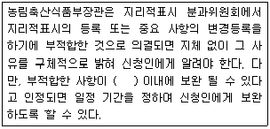
- 30일
- 40일
- 50일
- 60일
(정답률: 86%)
13. 농수산물 품질관리법령상 우수관리인증기관이 우수관리인증을 한 후 조사, 점검 등의 과정에서 위반행위가 확인되는 경우 1차 위반 시 그 인증을 취소해야 하는 사유가 아닌 것은?
- 우수관리인증의 표시정지기간 중에 우수관리인증의 표시를 한 경우
- 거짓이나 그 밖의 부정한 방법으로 우수관리인증을 받은 경우
- 전업(轉業)ㆍ폐업 등으로 우수관리인증농산물을 생산하기 어렵다고 판단되는 경우
- 우수관리인증을 받은 자가 정당한 사유 없이 조사ㆍ점검 또는 자료제출 요청에 응하지 아니한 경우
(정답률: 79%)
14. 농수산물 품질관리법령상 지리적표시품의 표시방법으로 옳지 않은 것은?
- 포장하지 아니하고 판매하는 경우에는 대상품목에 스티커를 부착하여 표시할 수 있다.
- 표지도형의 한글 및 영문 글자는 고딕체로 하고, 글자 크기는 표지도형의 크기에 따라 조정한다.
- 표지도형의 색상은 파란색을 기본색상으로 하고, 포장재의 색깔 등을 고려하여 검정색으로 한다.
- 지리적표시품의 포장ㆍ용기의 겉면 등에 등록 명칭을 표시하여야 한다.
(정답률: 89%)
15. 농수산물 품질관리법상 안전관리계획 및 안전성조사에 관한 설명으로 옳은 것은?
- 농산물 또는 농산물의 생산에 이용ㆍ사용하는 농지ㆍ용수(用水)ㆍ자재 등은 안전성 조사 대상이다.
- 농림축산식품부장관은 안전관리계획을 10년마다 수립ㆍ시행하여야 한다.
- 국립농산물품질관리원장은 안전관리계획에 따라 5년마다 세부추진계획을 수립ㆍ시행하여야 한다.
- 농산물의 안전성 조사는 수입통관단계 및 사후관리단계로 구분하여 조사한다.
(정답률: 87%)
16. 농수산물 품질관리법령상 농산물품질관리사의 업무가 아닌 것은?
- 농산물의 선별ㆍ저장 및 포장 시설 등의 운용ㆍ관리
- 농산물의 선별ㆍ포장 및 브랜드 개발 등 상품성 향상 지도
- 농산물의 판매가격 결정
- 포장농산물의 표시사항 준수에 관한 지도
(정답률: 92%)
17. 농수산물 유통 및 가격안정에 관한 법률상 산지유통인의 등록에 관한 설명으로 옳지 않은 것은?
- 농산물을 수집하여 도매시장에 출하하려는 자는 대통령령이 정하는 바에 따라 품목별로 농림축산식품부장관에게 등록하여야 한다.
- 국가나 지방자치단체는 산지유통인의 공정한 거래를 촉진하기 위하여 필요한 지원을 할 수 있다.
- 산지유통인은 등록된 도매시장에서 농산물의 출하업무 외의 판매ㆍ매수 또는 중개 업무를 하여서는 아니 된다.
- 도매시장법인의 임직원은 해당 도매시장에서 산지유통인의 업무를 하여서는 아니 된다.
(정답률: 70%)
18. 농수산물 유통 및 가격안정에 관한 법령상 표준정산서에 포함되어야 할 사항이 아닌 것은?
- 출하자 주소
- 정산금액
- 표준정산서의 발행일 및 발행자명
- 경락 예정가격
(정답률: 83%)
19. 농수산물 유통 및 가격안정에 관한 법령상 농림축산식품부장관이 농산물 전자거래를 촉진하기 위하여 한국농수산식품유통공사에게 수행하게 할 수 있는 업무가 아닌 것은?
- 도매시장법인이 전자거래를 하기 위하여 구축한 전자거래시스템의 승인
- 전자거래 분쟁조정위원회에 대한 운영 지원
- 전자거래에 관한 유통정보 서비스 제공
- 대금결제 지원을 위한 정산소(精算所)의 운영ㆍ관리
(정답률: 62%)
20. 농수산물 유통 및 가격안정에 관한 법령상 주산지 지정 등에 관한 설명으로 옳지 않은 것은?
- 해당 시ㆍ도 소속 공무원은 주산지협의체의 위원이 될 수 있다.
- 주산지의 지정은 읍ㆍ면ㆍ동 또는 시ㆍ군ㆍ구 단위로 한다.
- 주산지의 지정 및 해제는 국립농산물품질관리원장이 한다.
- 시ㆍ도지사는 지정된 주산지에서 주요 농산물을 생산하는 자에 대하여 생산자금의 융자 및 기술지도 등 필요한 지원을 할 수 있다.
(정답률: 70%)
21. 농수산물 유통 및 가격안정에 관한 법령상 도매시장 개설자가 도매시장법인으로 하여금 우선적으로 판매하게 할 수 있는 품목이 아닌 것은?
- 대량 입하품
- 최소출하기준 이하 출하품
- 예약 출하품
- 도매시장 개설자가 선정하는 우수출하주의 출하품
(정답률: 89%)
22. 농수산물 유통 및 가격안정에 관한 법률상 민영도매시장의 개설 및 운영 등에 관한 내용으로 옳지 않은 것은?
- 민영도매시장의 개설자는 중도매인, 매매참가인, 산지유통인 및 경매사를 두어 직접 운영하거나 시장도매인을 두어 이를 운영하게 할 수 있다.
- 민영도매시장을 개설하려는 장소가 교통체증을 유발할 수 있는 위치에 있는 경우에는 허가하지 않는다.
- 민간인이 광역시에 민영도매시장을 개설하려면 농림축산식품부장관의 허가를 받아야 한다.
- 민영도매시장의 중도매인은 민영도매시장의 개설자가 지정한다.
(정답률: 76%)
23. 농수산물 유통 및 가격안정에 관한 법률상 시장관리운영위원회의 심의사항으로 옳지 않은 것은?
- 도매시장의 거래제도 및 거래방법의 선택에 관한 사항
- 수수료, 시장 사용료, 하역비 등 각종 비용의 결정에 관한 사항
- 도매시장의 거래질서 확립에 관한 사항
- 시장관리자의 지정에 관한 사항
(정답률: 43%)
24. 농수산물 유통 및 가격안정에 관한 법령상 중앙도매시장이 아닌 곳은?
- 인천광역시 삼산 농산물도매시장
- 부산광역시 반여 농산물도매시장
- 광주광역시 각화동 농산물도매시장
- 대전광역시 노은 농산물도매시장
(정답률: 57%)
25. 농수산물 유통 및 가격안정에 관한 법률 제22조(도매시장의 운영 등)에 관한 내용이다. ( )에 들어갈 내용은?
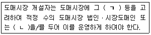
- ㄱ: 시설규모ㆍ거래액 ㄴ: 중도매인
- ㄱ: 취급부류ㆍ거래물량 ㄴ: 매매참가인
- ㄱ: 시설규모ㆍ거래물량 ㄴ: 산지유통인
- ㄱ: 취급품목ㆍ거래액 ㄴ: 경매사
(정답률: 78%)
2과목: 원예작물학
26. 우리나라에서 가장 넓은 재배면적을 차지하는 채소류는?
- 조미채소류
- 엽채류
- 양채류
- 근채류
(정답률: 77%)
27. 채소의 식품적 가치에 관한 일반적인 특징으로 옳지 않은 것은?
- 대부분 산성 식품이다.
- 약리적ㆍ기능성 식품이다.
- 각종 무기질이 풍부하다.
- 각종 비타민이 풍부하다.
(정답률: 83%)
28. 북주기[배토(培土)]를 하여 연백(軟白) 재배하는 작물을 모두 고른 것은?
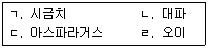
- ㄱ, ㄴ
- ㄱ, ㄹ
- ㄴ, ㄷ
- ㄷ, ㄹ
(정답률: 78%)
29. 비대근의 바람들이 현상은?
- 표피가 세로로 갈라지는 현상
- 조직이 갈변하고 표피가 거칠어지는 현상
- 뿌리가 여러 개로 갈라지는 현상
- 조직 내 공극이 커져 속이 비는 현상
(정답률: 87%)
30. 채소 작물의 식물학적 분류에서 같은 과(科)로 나열되지 않은 것은?
- 우엉, 상추, 쑥갓
- 가지, 감자, 고추
- 무, 양배추, 브로콜리
- 당근, 근대, 셀러리
(정답률: 40%)
31. 해충에 의한 피해를 감소시키기 위한 생물적 방제법은?
- 천적곤충 이용
- 토양 가열
- 유황 훈증
- 작부체계 개선
(정답률: 87%)
32. 작물별 단일조건에서 촉진되지 않는 것은?
- 마늘의 인경 비대
- 오이의 암꽃 착생
- 가을 배추의 엽구 형성
- 감자의 괴경 형성
(정답률: 71%)
33. 광합성 과정에서 명반응에 관한 설명으로 옳은 것은?
- 스트로마에서 일어난다.
- 캘빈회로라고 부른다.
- 틸라코이드에서 일어난다.
- CO2와 ATP를 이용하여 당을 생성한다.
(정답률: 39%)
34. 화훼 분류에서 구근류로 나열된 것은?
- 백합, 거베라, 장미
- 국화, 거베라, 장미
- 국화, 글라디올러스, 칸나
- 백합, 글라디올러스, 칸나
(정답률: 72%)
35. 여름철에 암막(단일)재배를 하여 개화를 촉진할 수 있는 화훼 작물은?
- 추국(秋菊)
- 페튜니아
- 금잔화
- 아이리스
(정답률: 75%)
36. DIF에 관한 설명으로 옳은 것은?
- 낮 온도에서 밤 온도를 뺀 값으로 주야간 온도 차이를 의미한다.
- 짧은 초장 유도를 위해 정(+)의 DIF 처리를 한다.
- 국화, 장미 등은 DIF에 대한 반응이 적다.
- 튤립, 수선화 등은 DIF에 대한 반응이 크다.
(정답률: 83%)
37. 화훼 작물별 주된 번식방법으로 옳지 않은 것은?
- 시클라멘 - 괴경 번식
- 아마릴리스 - 주아(珠芽) 번식
- 달리아 - 괴근 번식
- 수선화 - 인경 번식
(정답률: 53%)
38. 식물의 춘화에 관한 설명으로 옳지 않은 것은?
- 저온에 의해 개화가 촉진되는 현상이다.
- 구근류에 냉장 처리를 하면 개화 시기를 앞당길 수 있다.
- 종자춘화형에는 스위트피, 스타티스 등이 있다.
- 식물이 저온에 감응하는 부위는 잎이다.
(정답률: 82%)
39. 화훼류의 줄기 신장 촉진 방법이 아닌 것은?
- 지베렐린을 처리한다.
- Paclobutrazol을 처리한다.
- 질소 시비량을 늘린다.
- 재배환경을 개선하여 수광량을 늘린다.
(정답률: 55%)
40. 다음 설명에 모두 해당하는 해충은?
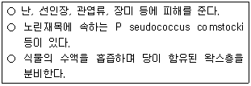
- 깍지벌레
- 도둑나방
- 콩풍뎅이
- 총채벌레
(정답률: 53%)
41. 에틸렌의 생성이나 작용을 억제하여 절화수명을 연장하는 물질이 아닌 것은?
- STS
- AVG
- Sucrose
- AOA
(정답률: 70%)
42. 화훼류의 블라인드 현상에 관한 설명으로 옳지 않은 것은?
- 일조량이 부족하면 발생한다.
- 일반적으로 야간 온도가 높은 경우 발생한다.
- 장미에서 주로 발생한다.
- 꽃눈이 꽃으로 발육하지 못하는 현상이다.
(정답률: 66%)
43. 자동적 단위결과 작물로 나열된 것은?
- 체리, 키위
- 바나나, 배
- 감, 무화과
- 복숭아, 블루베리
(정답률: 42%)
44. 개화기가 빨라 늦서리의 피해를 받을 우려가 큰 과수는?
- 복숭아나무
- 대추나무
- 감나무
- 포도나무
(정답률: 69%)
45. 과수의 가지(枝)에 관한 설명으로 옳지 않은 것은?
- 곁가지: 열매가지 또는 열매어미가지가 붙어 있어 결실 부위의 중심을 이루는 가지
- 덧가지: 새가지의 곁눈이 그 해에 자라서 된 가지
- 흡지: 지하부에서 발생한 가지
- 자람가지: 과실이 직접 달리거나 달릴 가지
(정답률: 66%)
46. 과수 작물 중 장미과에 속하는 것을 모두 고른 것은?
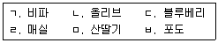
- ㄱ, ㄴ, ㄷ
- ㄱ, ㄹ, ㅁ
- ㄴ, ㄷ, ㅂ
- ㄹ, ㅁ, ㅂ
(정답률: 63%)
47. 종자 발아를 촉진하기 위한 파종 전 처리 방법이 아닌 것은?
- 온탕침지법
- 환상박피법
- 약제처리법
- 핵층파쇄법
(정답률: 56%)
48. 국내에서 육성된 과수 품종은?
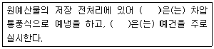
- 신고
- 거봉
- 홍로
- 부유
(정답률: 52%)
49. 과수의 휴면과 함께 수체 내에 증가하는 호르몬은?
- 지베렐린
- 옥신
- 아브시스산
- 시토키닌
(정답률: 66%)
50. 늦서리 피해 경감 대책에 관한 설명으로 옳지 않은 것은?
- 스프링클러를 이용하여 수상 살수를 실시한다.
- 과수원 선정 시 분지와 상로(霜路)가 되는 경사지를 피한다.
- 빙핵 세균을 살포한다.
- 왕겨ㆍ톱밥ㆍ등유 등을 태워 과수원의 기온 저하를 막아준다.
(정답률: 61%)
3과목: 수확 후 품질관리론
51. 원예산물의 품질요소 중 이화학적 특성이 아닌 것은?
- 경도
- 모양
- 당도
- 영양성분
(정답률: 73%)
52. Hunter 'b' 값이 +40일 때 측정된 부위의 과색은?
- 노란색
- 빨간색
- 초록색
- 파란색
(정답률: 77%)
53. 수분손실이 원예산물의 생리에 미치는 영향으로 옳은 것은?
- ABA 함량의 감소
- 팽압의 증가
- 세포막 구조의 유지
- 폴리갈락투로나아제의 활성 증가
(정답률: 58%)
54. 성숙 시 사과(후지) 과피의 주요 색소의 변화는?
- 엽록소 감소, 안토시아닌 감소
- 엽록소 감소, 안토시아닌 증가
- 엽록소 증가, 카로티노이드 감소
- 엽록소 증가, 카로티노이드 증가
(정답률: 84%)
55. 과실의 연화와 경도 변화에 관여하는 주된 물질은?
- 아미노산
- 비타민
- 펙틴
- 유기산
(정답률: 92%)
56. 원예산물의 형상선별기의 구동방식이 아닌 것은?
- 스프링식
- 벨트식
- 롤러식
- 드럼식
(정답률: 55%)
57. 원예산물의 저장 전처리 방법으로 옳은 것은?
- 마늘은 수확 후 줄기를 제거한 후 바로 저장고에 입고한다.
- 양파는 수확 후 녹변발생 억제를 위해 햇빛에 노출시킨다.
- 고구마는 온도 30℃, 상대습도 35∼50%에서 큐어링 한다.
- 감자는 온도 15℃, 상대습도 85∼90%에서 큐어링 한다.
(정답률: 71%)
58. 다음 ( )에 들어갈 품목을 순서대로 옳게 나열한 것은?
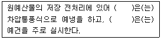
- 당근, 근대
- 딸기, 마늘
- 배추, 상추
- 수박, 오이
(정답률: 67%)
59. 신선편이(Fresh cut) 농산물의 특징으로 옳은 것은?
- 저온유통이 권장된다.
- 에틸렌의 발생량이 적다.
- 물리적 상처가 없다.
- 호흡률이 낮다.
(정답률: 84%)
60. 사과 수확기 판정을 위한 요오드 반응 검사에 관한 설명으로 옳지 않은 것은?
- 성숙 중 전분 함량 감소 원리를 이용한다.
- 성숙할수록 요오드 반응 착색 면적이 줄어든다.
- 종자 단면의 색깔 변화를 기준으로 판단한다.
- 수확기 보름 전부터 2∼3일 간격으로 실시한다.
(정답률: 65%)
61. 원예산물의 수확에 관한 설명으로 옳은 것은?
- 마늘은 추대가 되기 직전에 수확한다.
- 포도는 열과를 방지하기 위해 비가 온 후 수확한다.
- 양파는 수량 확보를 위해 잎이 도복되기 전에 수확한다.
- 후지 사과는 만개 후 일수를 기준으로 수확한다.
(정답률: 84%)
62. GMO 농산물에 관한 설명으로 옳지 않은 것은?
- 유전자변형 농산물을 말한다.
- 우리나라는 GMO 표시제를 시행하고 있다.
- GMO 표시를 한 농산물에 다른 농산물을 혼합하여 판매할 수 없다.
- GMO 표시대상이 아닌 농산물에 비(非)유전자변형 식품임을 표시할 수 있다.
(정답률: 56%)
63. 저장 중 원예산물에서 에틸렌에 의해 나타나는 증상을 모두 고른 것은?
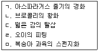
- ㄱ, ㄴ, ㄷ
- ㄱ, ㄹ, ㅁ
- ㄴ, ㄷ, ㄹ
- ㄷ, ㄹ, ㅁ
(정답률: 43%)
64. 다음 ( )에 들어갈 알맞은 내용을 순서대로 옳게 나열한 것은? (단, 5℃ 동일조건으로 저장한다.)
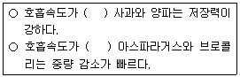
- 낮은, 낮은
- 낮은, 높은
- 높은, 낮은
- 높은, 높은
(정답률: 88%)
65. 포장재의 구비 조건에 관한 설명으로 옳지 않은 것은?
- 겉포장재는 취급과 수송 중 내용물을 보호할 수 있는 물리적 강도를 유지해야 한다.
- 겉포장재는 수분, 습기에 영향을 받지 않도록 방수성과 방습성이 우수해야 한다.
- 속포장재는 상품이 서로 부딪히지 않게 적절한 공간을 확보해야 한다.
- 속포장재는 호흡가스의 투과를 차단할 수 있어야 한다.
(정답률: 85%)
66. 국내 표준 파렛트 규격은?
- 1,100 mm × 1,000 mm
- 1,100 mm × 1,100 mm
- 1,200 mm × 1,100 mm
- 1,200 mm × 1,200 mm
(정답률: 75%)
67. HACCP에 관한 설명으로 옳은 것은?
- 식품에 문제가 발생한 후에 대처하기 위한 관리기준이다.
- 식품의 유통단계부터 위해요소를 관리한다.
- 7원칙에 따라 위해요소를 관리한다.
- 중요관리점을 결정한 후에 위해요소를 분석한다.
(정답률: 63%)
68. 포장치수 중 길이의 허용 범위(%)가 다른 포장재는?
- 골판지상자
- 그물망
- 직물제포대(PP대)
- 폴리에틸렌대(PE대)
(정답률: 59%)
69. 저장고의 냉장용량을 결정할 때 고려하지 않아도 되는 것은?
- 대류열
- 장비열
- 전도열
- 복사열
(정답률: 60%)
70. 원예산물의 저장 시 상품성 유지를 위한 허용 수분손실 최대치(%)가 큰 것부터 순서대로 나열한 것은?
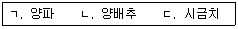
- ㄱ ＞ ㄴ ＞ ㄷ
- ㄱ ＞ ㄷ ＞ ㄴ
- ㄴ ＞ ㄱ ＞ ㄷ
- ㄴ ＞ ㄷ ＞ ㄱ
(정답률: 67%)
71. CA 저장고의 특성으로 옳지 않은 것은?
- 시설비와 유지관리비가 높다.
- 작업자가 위험에 노출될 우려가 있다.
- 저장산물의 품질분석이 용이하다.
- 가스 조성농도를 유지하기 위해서는 밀폐가 중요하다.
(정답률: 81%)
72. 원예산물별 저온장해 증상이 아닌 것은?
- 수박 - 수침현상
- 토마토 - 후숙불량
- 바나나 - 갈변현상
- 참외 - 과숙(過熟)현상
(정답률: 79%)
73. 원예산물의 예냉에 관한 설명으로 옳지 않은 것은?
- 원예산물의 품온을 단시간 내 낮추는 처리이다.
- 냉매의 이동속도가 빠를수록 예냉효율이 높다.
- 냉매는 액체보다 기체의 예냉효율이 높다.
- 냉매와 접촉 면적이 넓을수록 예냉효율이 높다.
(정답률: 70%)
74. 사과 밀증상의 주요 원인물질은?
- 구연산
- 솔비톨
- 메티오닌
- 솔라닌
(정답률: 82%)
75. 원예산물별 신선편이 농산물의 품질변화 현상으로 옳지 않은 것은?
- 당근 - 백화현상
- 감자 - 갈변현상
- 양배추 - 황반현상
- 마늘 - 녹변현상
(정답률: 40%)
4과목: 농산물유통론
76. 우리나라 농산물 유통의 일반적 특징으로 옳은 것은?
- 표준화ㆍ등급화가 용이하다.
- 운반과 보관비용이 적게 소요된다.
- 수요의 가격탄력성이 높다.
- 생산은 계절적이나 소비는 연중 발생한다.
(정답률: 92%)
77. 농산물 도매유통의 조성기능이 아닌 것은?
- 상장하여 경매한다.
- 경락대금을 정산ㆍ결제한다.
- 경락가격을 공표한다.
- 도매시장 반입물량을 공지한다.
(정답률: 46%)
78. 우리나라 협동조합 유통 사업에 관한 설명으로 옳은 것은?
- 시장교섭력을 저하시킨다.
- 생산자의 수취가격을 낮춘다.
- 규모의 경제를 실현할 수 있다.
- 공동계산으로 농가별 판매결정권을 갖는다.
(정답률: 91%)
79. 농산물 산지유통의 거래유형을 모두 고른 것은?
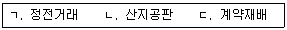
- ㄱ, ㄴ
- ㄱ, ㄷ
- ㄴ, ㄷ
- ㄱ, ㄴ, ㄷ
(정답률: 75%)
80. 산지 농산물의 공동판매 원칙은?
- 조건부 위탁 원칙
- 평균판매 원칙
- 개별출하 원칙
- 최고가 구매 원칙
(정답률: 75%)
81. 항상 낮은 가격으로 상품을 판매하는 소매업체의 가격전략은?
- High - Low가격전략
- 명성가격전략
- EDLP전략
- 초기저가전략
(정답률: 64%)
82. 선물거래에 관한 설명으로 옳은 것은?
- 헤저(hedger)는 위험 회피를 목적으로 한다.
- 거래당사자 간에 직접 거래한다.
- 포전거래는 선물거래에 해당된다.
- 정부의 시장개입을 전제로 한다.
(정답률: 62%)
83. 거미집이론에서 균형가격에 수렴하는 조건에 관한 내용이다. ( )에 들어갈 내용을 순서대로 나열한 것은?
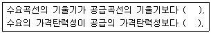
- 작고, 작다
- 작고, 크다
- 크고, 작다
- 크고, 크다
(정답률: 57%)
84. 5kg들이 참외 1상자의 유통단계별 판매 가격이 생산자 30,000원, 산지공판장 32,000원, 도매상 36,000원, 소매상 40,000원일 때, 소매상의 유통마진율(%)은?
- 10
- 20
- 25
- 30
(정답률: 50%)
85. 시장도매인제에 관한 설명으로 옳지 않은 것은?
- 상장경매를 원칙으로 한다.
- 도매시장법인과 중도매인의 역할을 겸할 수 있다.
- 농가의 출하선택권을 확대한다.
- 도매시장 내 유통주체 간 경쟁을 촉진한다.
(정답률: 15%)
86. 농가가 엽근채소류의 포전거래에 참여하는 이유가 아닌 것은?
- 생산량 및 수확기의 가격 예측이 곤란하기 때문이다.
- 계약금을 받아서 부족한 현금 수요를 충당할 수 있기 때문이다.
- 채소가격안정제사업 참여가 불가능하기 때문이다.
- 수확 및 상품화에 필요한 노동력이 부족하기 때문이다.
(정답률: 75%)
87. 정가ㆍ수의매매에 관한 설명으로 옳지 않은 것은?
- 경매사가 출하자와 중도매인 간의 거래를 주관한다.
- 출하자가 시장도매인에게 거래가격을 제시할 수 없다.
- 단기 수급상황 변화에 따른 급격한 가격변동을 완화할 수 있다.
- 출하자의 가격 예측 가능성을 제고한다.
(정답률: 58%)
88. 농산물 표준규격화에 관한 설명으로 옳지 않은 것은?
- 유통비용의 증가를 초래한다.
- 견본거래, 전자상거래 등을 촉진한다.
- 품질에 따른 공정한 거래를 할 수 있다.
- 브랜드화가 용이하다.
(정답률: 87%)
89. 농산물 산지유통조직의 통합마케팅사업에 관한 설명으로 옳은 것을 모두 고른 것은?
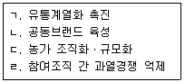
- ㄱ, ㄴ
- ㄷ, ㄹ
- ㄱ, ㄷ, ㄹ
- ㄱ, ㄴ, ㄷ, ㄹ
(정답률: 87%)
90. 단위화물적재시스템(ULS)에 관한 설명으로 옳은 것을 모두 고른 것은?
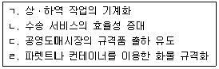
- ㄱ, ㄴ
- ㄷ, ㄹ
- ㄱ, ㄷ, ㄹ
- ㄱ, ㄴ, ㄷ, ㄹ
(정답률: 84%)
91. 농산물 생산과 소비의 시간적 간격을 극복하기 위한 물적 유통기능은?
- 수송
- 저장
- 가공
- 포장
(정답률: 63%)
92. 농산물 수급불안 시 비상품(非商品)의 유통을 규제하거나 출하량을 조절하는 등의 수급안정정책은?
- 수매비축
- 직접지불제
- 유통조절명령
- 출하약정
(정답률: 80%)
93. 제품수명주기상 대량생산이 본격화되고 원가 하락으로 단위당 이익이 최고점에 달하는 시기는?
- 성숙기
- 도입기
- 성장기
- 쇠퇴기
(정답률: 57%)
94. 소비자의 구매의사결정 순서를 옳게 나열한 것은?
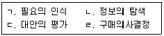
- ㄱ →ㄴ →ㄷ → ㄹ
- ㄴ→ ㄱ → ㄷ→ ㄹ
- ㄷ →ㄱ →ㄴ → ㄹ
- ㄷ→ ㄴ → ㄱ→ ㄹ
(정답률: 91%)
95. 농산물의 공급이 변동할 때 공급량의 변동폭보다 가격의 변동폭이 훨씬 더 크게 나타나는 현상과 관련된 것을 모두 고른 것은?
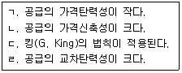
- ㄱ, ㄴ
- ㄴ, ㄷ
- ㄱ, ㄴ, ㄷ
- ㄱ, ㄷ, ㄹ
(정답률: 60%)
96. 소비자의 식생활 변화에 따라 1인당 쌀 소비량이 지속적으로 감소하는 경향과 같은 변동형태는?
- 순환변동
- 추세변동
- 계절변동
- 주기변동
(정답률: 88%)
97. 설문지를 이용하여 표본조사를 실시하는 방법은?
- 실험조사
- 심층면접법
- 서베이조사
- 관찰법
(정답률: 81%)
98. 정부가 농산물의 목표가격과 시장가격 간의 차액을 직접 지불하는 정책은?
- 공공비축제도
- 부족불제도
- 이중곡가제도
- 생산조정제도
(정답률: 87%)
99. 농산물의 촉진가격 전략이 아닌 것은?
- 고객유인 가격전략
- 특별염가 전략
- 미끼가격 전략
- 개수가격 전략
(정답률: 64%)
100. 광고와 홍보에 관한 설명으로 옳지 않은 것은?
- 광고는 광고주가 비용을 지불하는 비(非) 인적 판매활동이다.
- 기업광고는 기업에 대하여 호의적인 이미지를 형성시킨다.
- 카피라이터는 고객이 공감할 수 있는 언어로 메시지를 만든다.
- 홍보는 비용을 지불하는 상업적 활동이다.
(정답률: 66%)
따라서, "명성"이 정답인 이유는 해당 제품이 "명성"이라는 지명상표를 가지고 있기 때문이다. "포장"이나 "무게"는 제품의 특성과는 관련이 없으며, "생산자"는 지리적표시와는 관련이 있지만, 해당 제품의 특성을 나타내는 것이 아니기 때문이다.